第二章 搜索算法
DFS / BFS 两副骨架，往上叠迭代加深、双向 BFS、A* 与 IDA*，搜索题的分水岭在剪枝写得好不好。
搜索算法简介
- 定义：利用计算机的高性能，有目的地穷举问题的部分或全部状态，从而找到解；搜索过程本质是按扩展规则构造解答树、寻找目标节点。
- 与枚举的区别：枚举是“平铺着试”，搜索有方向性和目标性——从一个状态转移到下一个状态，向解的方向扩展。
- 搜索的两大基本形态：
- BFS（广度优先）：从初态生成全部下一层状态并检查目标，逐层展开；用队列模拟。取队首扩展 → 新状态入队 → 队首出队 → 重复，直到找到解或队列空。
- DFS（深度优先 / 回溯）：沿一条分支一路向下，遇到叶节点仍非目标就回溯换分支；用栈（递归即隐式栈）模拟。
- 两者的选择：求“最少步数/最短路径”用 BFS（第一个到达目标即最短）；求“所有方案 / 是否可达 / 深搜剪枝”用 DFS，空间更省。
结合实例解析深度优先搜索(DFS)搜索
- 一句话：一条路走到黑，走不通再回头换路。
- 实现靠栈保存路径；递归写法最自然：访问当前点 → 标记 → 枚举邻接点递归 → 取消标记。
- 遍历图的步骤：从起点出发访问 → 依次访问未访问邻接点 → 若有顶点仍未访问，换一个起点继续 → 直到全部访问。
- 三个关键动作：
- 剪枝：提前判断“这条路不可能出解”，减少时间成本；
- 回溯：退回到上一层状态；
- 还原现场：撤销本层做过的标记/修改，否则后续路径会被“污染”。
- 经典例题（骑士遍历棋盘）：n×m 棋盘，马按“日”字走，不重复经过同一点，问遍历全部点的方案数。
- 8 个方向写成两个方向数组；
dfs(x, y, 剩余步数)；棋盘不重复访问用bool g[10][10]标记，回溯时清标记。 - 答案要累加所有完整路径，不是找到一个就停，所以不做“找到即返回”。
const int a[] = {1, 2, 2, 1, -1, -2, -2, -1};
const int b[] = {2, 1, -1, -2, -2, -1, 1, 2};
void dfs(int x, int y, int left) {
if (left == 0) { ++cnt; return; }
for (int i = 0; i < 8; ++i) {
int nx = x + a[i], ny = y + b[i];
if (nx >= 0 && nx < n && ny >= 0 && ny < m && !g[nx][ny]) {
g[nx][ny] = true;
dfs(nx, ny, left - 1);
g[nx][ny] = false; // 回溯：还原现场
}
}
}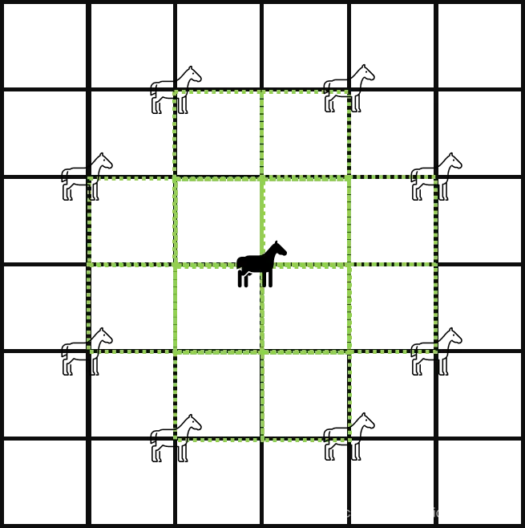
结合实例解析宽度优先搜索(BFS)搜索
- 定义：从起点开始一层层向外扩展，先访问所有距离为 1 的点，再访问距离为 2 的点……是很多图算法（Dijkstra、Prim）的原型，属于“盲目搜索”。
- 实现要素：队列 + 访问标记（入队即标记，避免重复入队）。
- 流程：起点入队 → 取队首出队 → 扩展其未访问邻接点入队并标记 → 队空或到达目标结束。
- BFS 与 DFS 的差别：DFS 关心“递归 + 回溯”，BFS 关心“状态选取 + 标记”。
- 例题一（农夫追牛）：从 n 到 k，每步可
x-1、x+1、2x，求最少步数。 - 三种转移等价于三条边，求最少步数 ⇒ BFS；用
dist[]记录步数并判重。 - 注意
x-1不能小于 0、2x不能越界（可设上限 2×10⁵）。
while (!q.empty()) {
int x = q.front(); q.pop();
if (x == k) { cout << d[x]; break; }
for (int nx : {x - 1, x + 1, x * 2})
if (nx >= 0 && nx <= 200000 && !vis[nx])
vis[nx] = true, d[nx] = d[x] + 1, q.push(nx);
}- BFS 适用于边权相同的最短路；边权不同要换 Dijkstra。
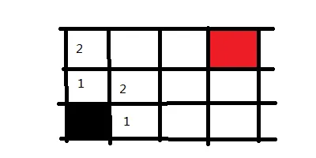
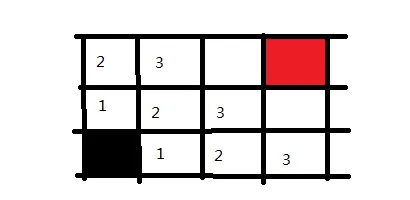
结合实例解析双向搜索
- 思想：同时从起点和终点向中间搜索，两边“碰头”即得到答案，搜索树规模从
b^d降到2·b^(d/2)。 - 适用信号：题目同时给出始态与终态，且正向搜索空间过大。
- 双向 DFS：先搜前一半空间并保存所有可达值，再搜后一半空间，查是否在前一半中出现（如“折半枚举 / meet in the middle”）。
- 双向 BFS：维护 q1（从起点）、q2（从终点）两个队列；每次扩展较小的那个队列（均衡两边），新状态若已被另一侧标记则相遇，答案为两边步数之和。
q1.push(S), q2.push(T), vis[S] = 1, vis[T] = 2;
while (!q1.empty() && !q2.empty()) {
if (q1.size() > q2.size()) expand(q2) else expand(q1);
}- 只需一个队列也可实现：队列元素里多带一个“来自哪一侧”的标记。
- 例题（随机图多次最短路查询）：点边规模大、询问多。
- 双向 BFS 扩展每点的邻接点；先用并查集判两点是否连通，不连通直接输出 -1；
- 注意每轮询问要清空标记数组，可用“时间戳”代替 memset 降低开销。
什么是启发式搜索？
- 定义：在普通搜索中引入启发函数 h(n)，对每个分支做估价，优先扩展更“有希望”的方向，甚至直接砍掉明显无效的枝。
- 贪婪最佳优先：优先队列按“到终点的估计距离 h”排序，速度快但不保证最优（类似贪心）。
- Dijkstra：按“到起点的实际代价 g”排序，保证最优但盲目、扩展点多。
- A\*：按
f = g + h排序，兼顾已付代价与目标引导，h越准越省。 - 三个算法的关系：
h ≡ 0时 A\* 退化为 Dijkstra；g ≡ 0时退化为贪婪最佳优先。 - 例题（采草药）：限时 T，每株有采摘时间和价值，求最大总价值。
- 搜索 + 上界估价剪枝：按单位时间价值排序后做“剩余时间最多还能拿多少价值”的乐观估计，超过当前最优就剪掉。
- 启发式搜索的收益取决于 h 的质量：h 过于乐观则剪枝弱，过于悲观则可能丢最优解（需保证
h可采纳）。
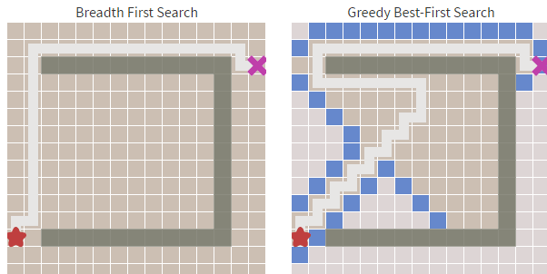
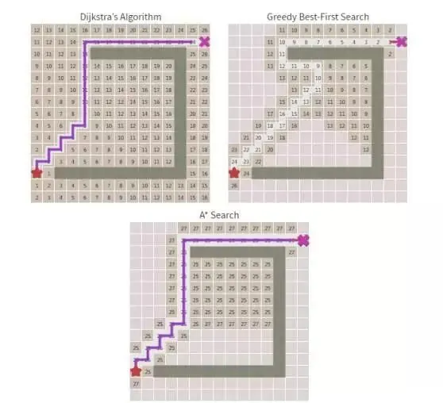
图文解析A*搜索算法
- 来源：由 Dijkstra 改进，属于图遍历 + 最佳优先搜索，是 BFS 的加强版。
- 核心公式：
f(n) = g(n) + h(n) g(n)：起点到 n 的实际代价；h(n)：n 到终点的估计代价（启发函数）；f(n)：经 n 到终点的总估计代价。- 两个集合：OPEN（待扩展，按 f 排序）、CLOSED（已扩展）。
- 流程：起点入 OPEN → 取 f 最小的节点移入 CLOSED → 扩展其邻居：若更优则更新
g与父指针并入 OPEN → 到达目标后沿父指针逆序回溯得到路径。 - 细节：f 相同则
h小者优先；已在 OPEN 中且新 g 更小要更新（“松弛”操作）。 - 保证最优的条件：
h可采纳（不高估真实剩余代价），如网格曼哈顿/欧氏距离；若h高估则可能找到次优解。 - 例：图中 S→G，
c(A,E)=9、h(A)=15，则f(A)=g(A)+h(A)；示例最优路径为S→B→F→k→G。 - 复杂度取决于 h：h 越接近真实值，扩展节点越少；
h=0即 Dijkstra。
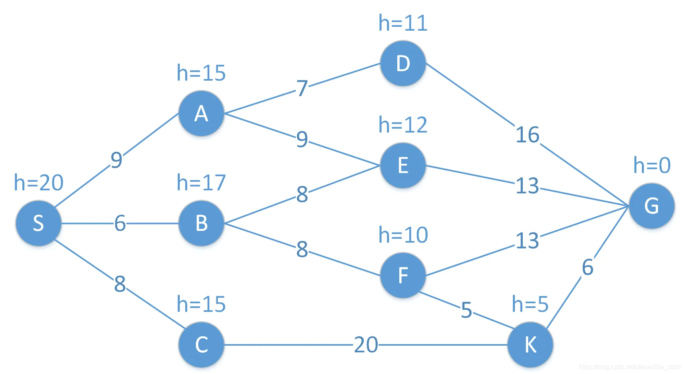
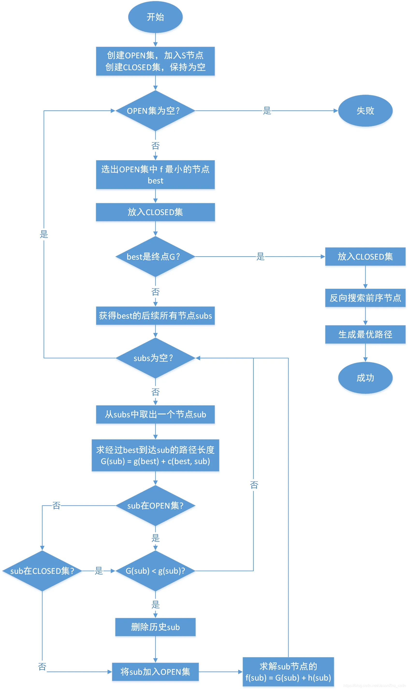
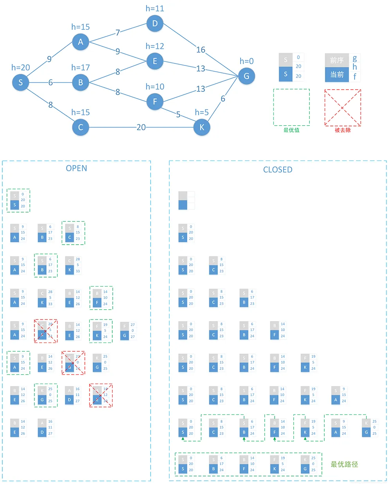
C++代码浅谈迭代加深搜索
- 定义：每次给 DFS 限定一个深度上限 d，搜不到就把 d 加 1 重新从根搜索。
- 用途：找最优解（最少步数），但又不想承担 BFS 的队列空间。
- 本质仍是 DFS，只多了“
d > 限制就返回”的判断；空间 O(深度)，远小于 BFS 的 O(状态数)。 - 为什么可行：分支多时每层节点数指数增长，浅层的重复搜索开销相对于最后一层可忽略，总复杂度与 BFS 同阶。
- 伪代码：
bool IDDFS(int u, int d) { // 返回是否在限定深度内找到解
if (d > limit) return false; // 超过本轮深度上限，回头
if (isTarget(u)) return true;
for (int v : adj[u])
if (IDDFS(v, d + 1)) return true;
return false;
}
// 外层：for (limit = 0; ; ++limit) if (IDDFS(root, 0)) break;- 选择策略：BFS 好判重、空间够时用 BFS；空间吃紧又要最优解时用迭代加深。
C++代码浅谈IDA*算法
- 定义：迭代加深 + A\*（用 DFS 方式实现 A\*），即每轮限定深度
deep，用估价函数剪掉“最少也走不完”的枝。 - 解决的问题：
- A\* 需要判重与优先队列排序；
- A\* 的堆占用大量空间。
- 思想：深度从 0 起递增，第一次搜到目标的深度就是最短步数。
- 关键判断：
predict() > deep就返回 false（乐观估计都超出剩余深度，必不可能到达）。 - 结构：外层
incDeep(u)递增深度，内层IDAstar(u, deep)：先估价剪枝 → 判断目标 → 递归子节点。
bool IDAstar(int u, int deep) {
if (predict(u) > deep) return false; // 乐观估计都超了，剪枝
if (isTarget(u)) return true;
if (deep == 0) return false;
for (int v : adj[u]) if (IDAstar(v, deep - 1)) return true;
return false;
}- 缺点：每轮失败都要从头再搜；深度大时递归需改栈模拟。
- 适用：A\* 空间不够、或状态难以哈希判重的场合（如 15 数码、八数码）。
回溯法入门级讲解
- 本质：暴力枚举 + 及时回头，最多再加剪枝，是“通用解题法”。
- 能解的题型：组合（n 选 k）、排列（全排列）、切割（字符串分段）、子集、棋盘（N 皇后、数独）。
- 解空间树两种形态：
- 子集树：每个元素“选/不选”，共 2ⁿ 个叶（0-1 背包）；
- 排列树：元素的全排列，共 n! 个叶（旅行商、N 皇后按行放置）。
- 与其它方法的关系：回溯 ≈ 图 DFS ≈ 二叉树后序；分支限界 ≈ 图 BFS ≈ 层序。
- 剪枝函数两类：
- 约束函数：剪掉不满足约束的路径（如皇后互相攻击）；
- 限界函数：剪掉不可能优于当前最优的路径（如背包超重或上界不足）。
- 递归范式（N 叉树）：
void backtrack(int t) {
if (t > n) { output(x); return; } // 到叶子，得到一个可行解
for (int i = 1; i <= k; ++i) { // 枚举当前层所有取值
x[t] = value(i);
if (constraint(t) && bound(t)) backtrack(t + 1);
}
}- 迭代版本省递归栈但要自己维护“当前层 + 已试到第几个分支”，设计更复杂。
- 复杂度一般是指数级，规模稍大必须靠剪枝或换 DP/搜索优化。
回溯法经典例题分析
- 工作原理四步：构造解空间树 → 遍历 → 遇边界条件换分支 → 达到目标输出。
- 例题一：0-1 背包（子集树）
x[i]=1/0表示放/不放；到达叶子比较总价值；- 剪枝一（约束）：
CurWeight + w[i] > C不放； - 剪枝二（限界）：剩余物品全部取也超不过当前最优就返回。
- 例题二：N 皇后（按行放置，行内枚举列）
- 逐行放皇后，
Feasible(row, col)只需检查同列与两条斜线是否已有皇后； - 合法则放、递归下一行、回溯时撤销；
t > N时方案数加一。 - 技巧：把二维棋盘判断压成一维数组更省时——
col[j]、d1[i+j]、d2[i-j+n]三个标记数组即可 O(1) 判冲突。
void queen(int row) {
if (row > n) { ++ways; return; }
for (int j = 1; j <= n; ++j) {
if (col[j] || d1[row + j] || d2[row - j + n]) continue;
col[j] = d1[row + j] = d2[row - j + n] = 1;
queen(row + 1);
col[j] = d1[row + j] = d2[row - j + n] = 0;
}
}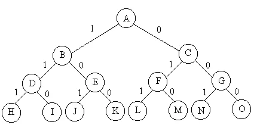
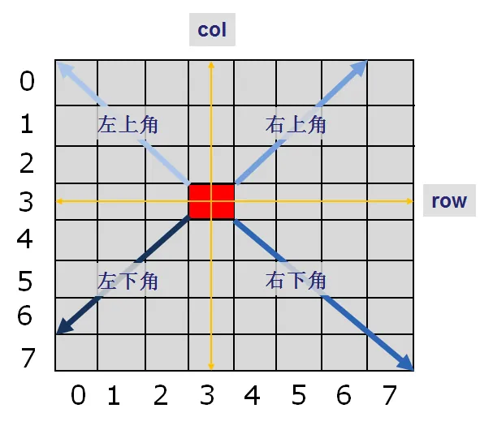
最优化算法实例讲解
- DFS 是大多数题的“骗分利器”，很少作为正解，因为复杂度高；正解往往需要剪枝、记忆化或换 DP。
- 两类用法：
- 定义上的 DFS：测连通性、求可达点（迷宫、图的条件搜索）；
- 广义 DFS（爆搜）：按搜索顺序穷举所有方案，再取最优/合法解。
- 精髓在递归求解 + 回溯处理，成败在剪枝。
- 连通性模型两种写法：
- 只统计“能到达多少个点”：不需要回溯，访问过就永久标记；
- 判断两点是否连通 / 走迷宫：需要回溯，非法的路要还原现场。
- 同一模型可基于邻接矩阵、邻接表、边集数组实现，只是遍历方式不同。
- 常见优化：
- 可行性剪枝（越界、冲突、超限立即返回）；
- 最优性剪枝（当前代价已劣于已知最优）；
- 搜索顺序优化（先试更可能成功的分支）；
- 等效性剪枝 / 记忆化（相同状态只算一次）。
- 竞赛里写爆搜要先想清三件事：状态怎么表示、终止条件、怎么剪枝。
Alpha-Beta剪枝搜索图文讲解
- 前提：博弈树（双方轮流行动展开成树）+ 深度优先搜索。
- 角色设定：走棋方为 MAX（取子节点评估值的最大值），对手为 MIN（取最小值）。
- α：MAX 沿着已完成分支能保证的下界（“我已能拿到这么多”）。
- β：MIN 能压制到的上界（“对手最多让我拿这么多”）。
- α 剪枝：在 MAX 节点继续试别的着法时，若某个孙节点的值低于 α，这条枝不必再展开。
- β 剪枝：在 MIN 节点若某孙节点值高于 β，同样剪掉。
- 合起来：当
α ≥ β时即可停止该节点的搜索，返回当前界。 - 本质仍是穷尽搜索，只是跳过了“不可能影响最终决策”的子树；剪枝效果强烈依赖着法排序（好的着法先试，剪得更多）。
- 最优情况下复杂度从
O(b^d)降到约O(b^(d/2))，相当于同样时间多看一倍深度。
int alphaBeta(pos, depth, alpha, beta, maximizing) {
if (depth == 0 || gameOver(pos)) return evaluate(pos);
if (maximizing) {
for (move : moves(pos)) {
alpha = max(alpha, alphaBeta(next, depth-1, alpha, beta, false));
if (alpha >= beta) break; // β 剪枝
}
return alpha;
} else {
for (move : moves(pos)) {
beta = min(beta, alphaBeta(next, depth-1, alpha, beta, true));
if (alpha >= beta) break; // α 剪枝
}
return beta;
}
}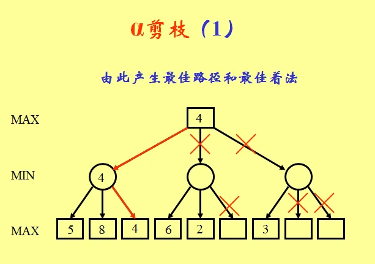
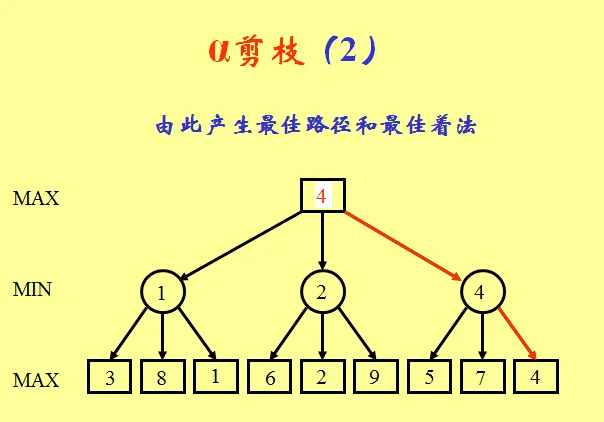
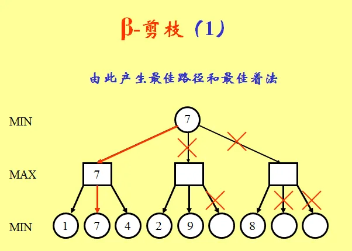
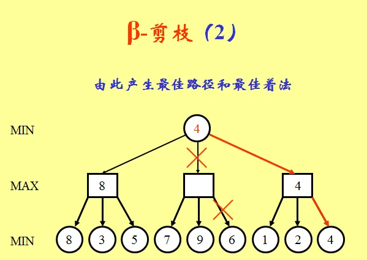
Minimax算法（极小化极大算法）及实例讲解
- 定义：零和博弈的标准搜索算法——我方选使自己收益最大的着法，对手选使收益最小的着法。
- 属于悲观算法：假设对手每步都完美决策，于是“在最坏情况中挑最好的”。
- 它不追求“理论最大值”（那要求对手犯错），而追求最小损失：对手越差，实际结果越好。
- 格局树：每个节点是一种局面，父子表示一步走法；叶子用评估函数打分，然后自底向上交替取 max / min。
- 博弈树通常极庞大，实际只搜有限深度，得到的是局部最优；更深处用评估函数近似。
- 实例（三盘纸币）：甲选一个盘子 → 乙从该盘拿两张给甲 → 甲再选一张拿走，甲求最大、乙求最小。
- 叶子是“甲最终拿到的那张面值”；乙层取 min（挑让甲最小的两张组合），甲层取 max（挑盘子、挑最后一张）。
- 与 α-β 的关系：α-β 是 Minimax 的剪枝加速版，结果完全一致但访问节点更少。
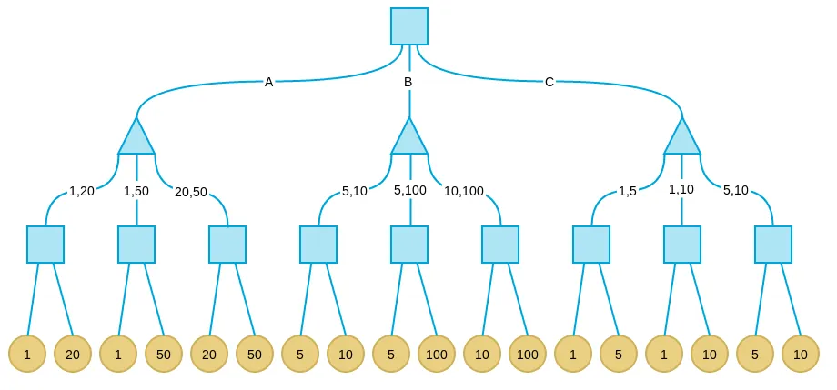
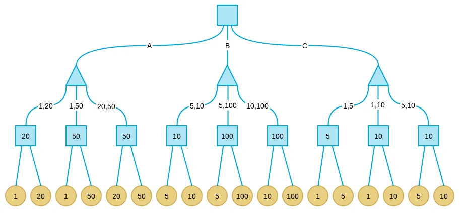
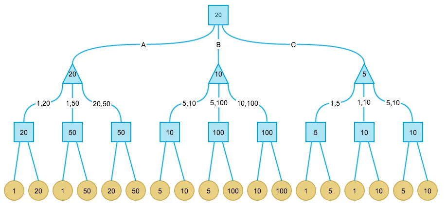
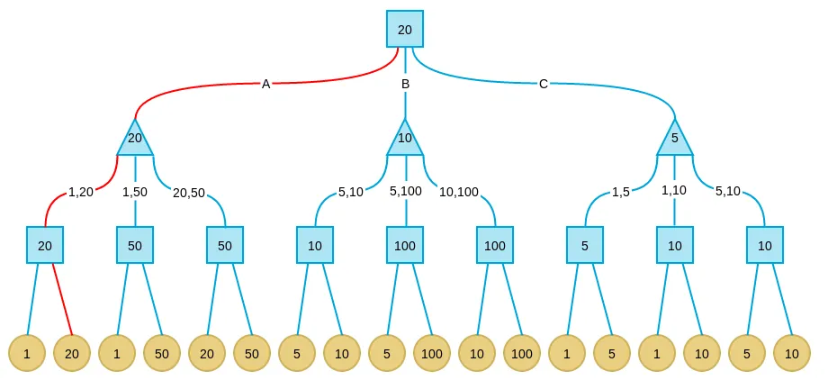
舞蹈链算法（Dancing Links）运用及执行过程
- 精确覆盖问题：全集 X，子集族 S，找 S 的子集 S\*，使 X 中每个元素恰好出现一次；这是 NP 完全问题。
- 矩阵化：每行 = 一个子集，每列 = X 的一个元素，1 表示包含；问题变为“选出若干行，使每列恰好一个 1”。
- 上例
X={1..7}，A={1,4,7}, B={1,4}, C={4,5,7}, D={3,5,6}, E={2,3,6,7}, F={2,7}，精确覆盖为{B, D, F}。 - X 算法（非确定性的深度优先回溯）：
1. 矩阵无列 ⇒ 当前解合法，成功返回； 2. 选一列 c（通常选 1 最少的列）；若该列无 1 ⇒ 失败回溯； 3. 枚举行 r 使 A[r][c]=1，把 r 加入解； 4. 删除 r 覆盖到的所有列，以及这些列上有 1 的所有行（“冲突的行”）； 5. 在新矩阵上递归； 6. 回溯时按删除的逆序恢复。
- Dancing Links 的作用：用十字双向循环链表表示 0-1 矩阵，使“删除一列/一行”和“恢复”都是 O(1) 的指针操作，从而让 X 算法跑得飞快。
- 结点结构：每个 1 是一个结点，含
left/right/up/down四个指针 +col归属；列头结点额外存size（该列 1 的个数）。 - 关键操作：
remove(c)删列头及其所在行链，resume(c)逆序恢复——恢复顺序必须与删除顺序相反。
void remove(int c) { // 删除第 c 列
L[R[c]] = L[c]; R[L[c]] = R[c];
for (int i = D[c]; i != c; i = D[i])
for (int j = R[i]; j != i; j = R[j])
U[D[j]] = U[j], D[U[j]] = D[j], --sz[col[j]];
}- 用途：数独、骨牌拼图、N 皇后、精确覆盖型谜题的统一解法。
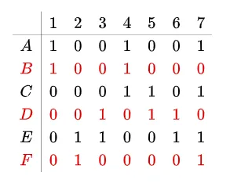

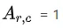
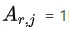
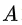
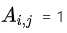
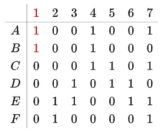
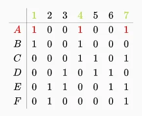
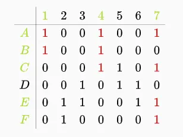
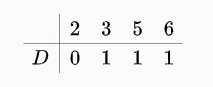
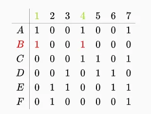
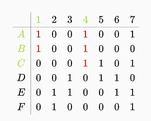
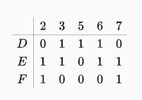
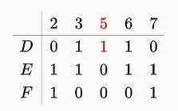
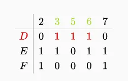
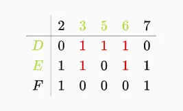
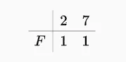
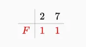
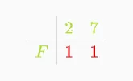
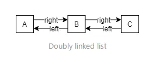
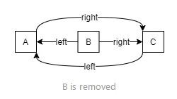
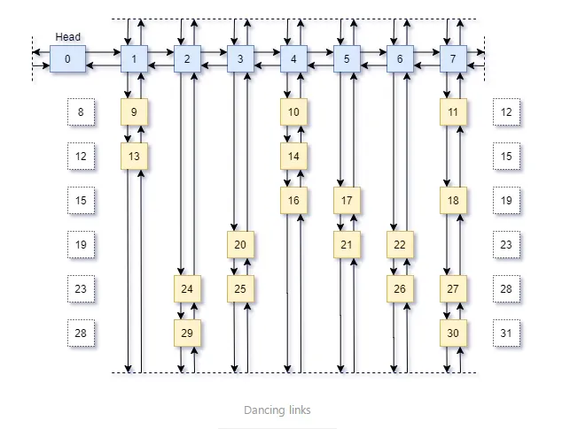
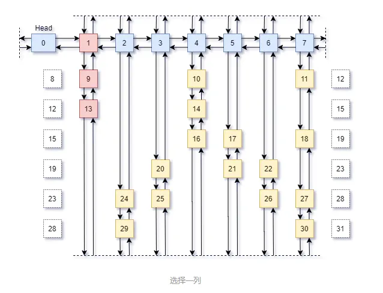
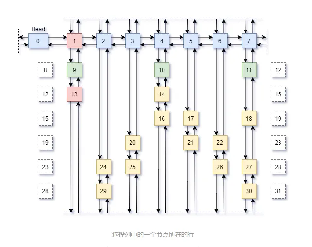
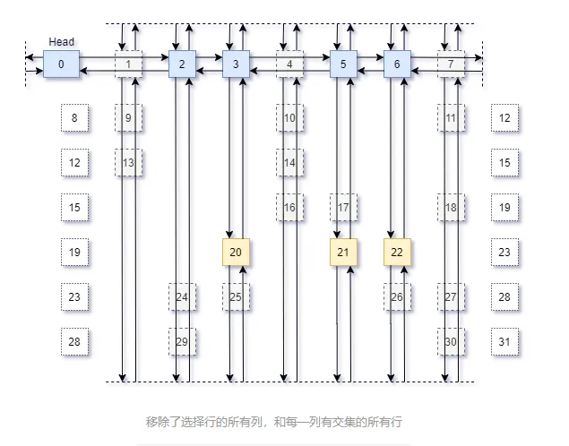
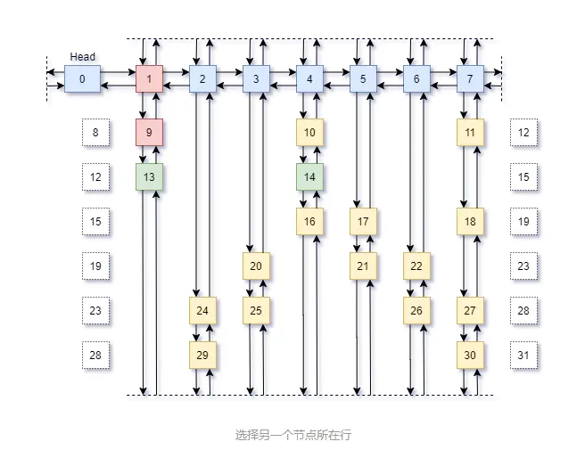
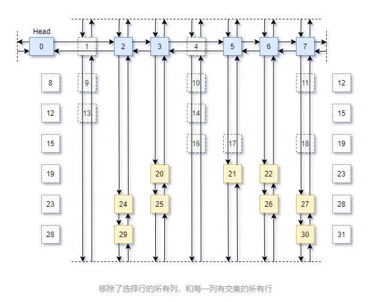
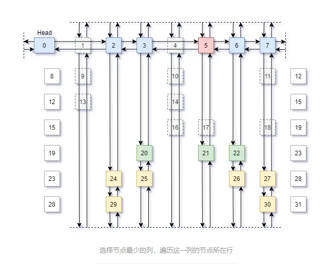
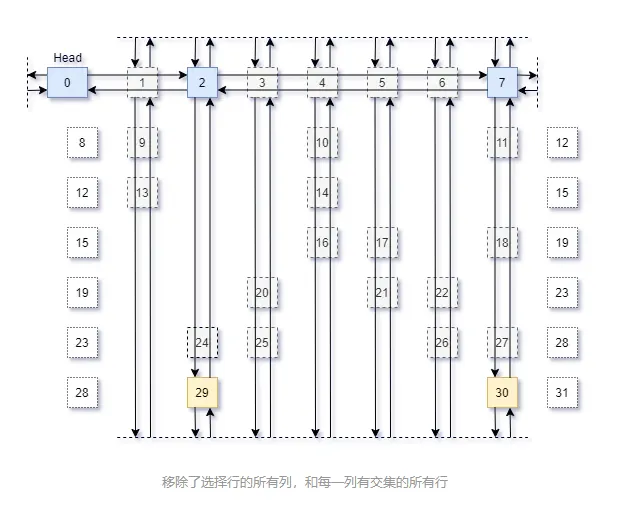
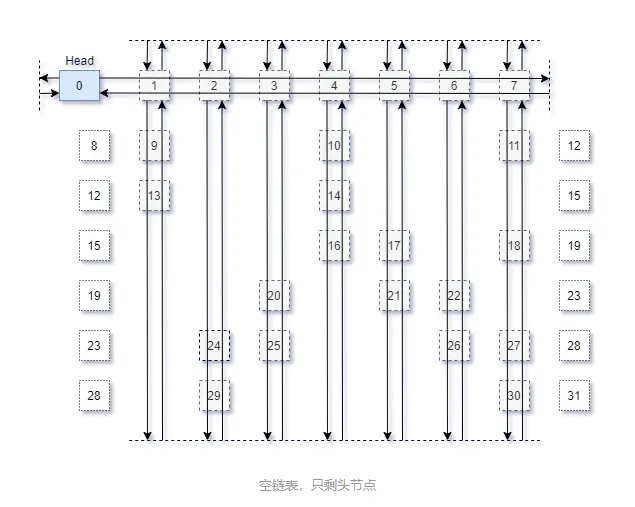
舞蹈链算法（Dancing links）实例讲解
- 用 DLX 解实际题的唯一难点：把题目化成 0-1 精确覆盖模型；建模完成后套模板即可。
- 建模三步：找出所有约束（每个约束 ⇒ 一组列）→ 找出所有可选择的操作（每个操作 ⇒ 一行）→ 确定每行在各列上的 1。
- 应用一：伤脑筋十二块（12 片五格骨牌拼 6×10）
- 列数 72 = 12（每种骨牌恰好用一次）+ 60（棋盘 60 个非中心格各被覆盖一次）；
- 每行 = 某块骨牌在某位置的某种摆放，行内有 5 个 1（覆盖 5 格）+ 1 个 1（占用该骨牌对应的列）；
- 全矩阵共 1568 行（各骨牌合法摆放数之和，如长条 I 有 64 种）。
- 应用二：数独
- 四条约束 ⇒ 324 列：81（每格填一个数）+ 81（每行 1-9 各一次）+ 81（每列）+ 81（每宫）；
- 每行 = “在第 r 行第 c 列填数字 d”这一决策，恰好命中 4 个 1；
- 共 9×9×9 = 729 行，精确覆盖的解即数独答案。
- 输出时按选中行的语义还原棋盘即可。
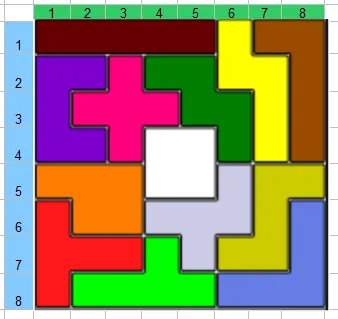
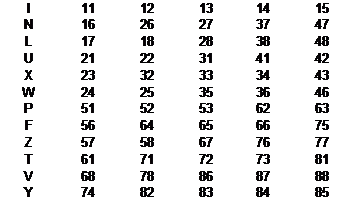
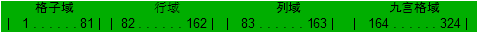